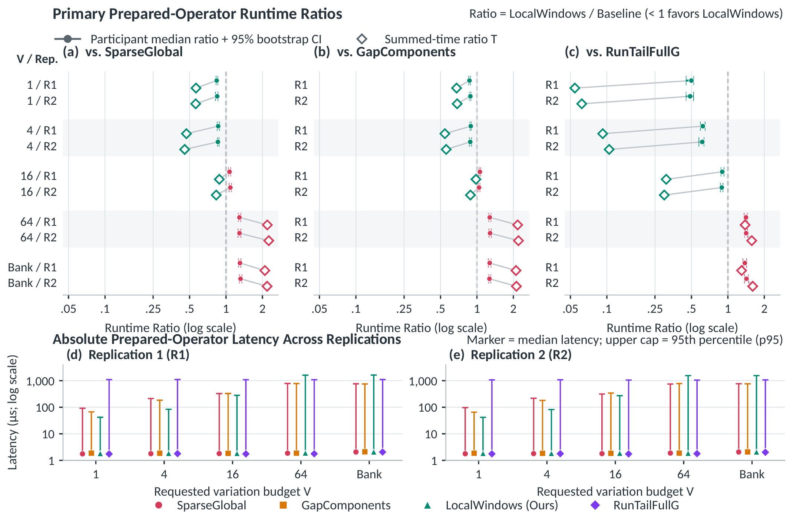

Exact Range-Count Envelopes
Over Ordered Time Series
Under Total-Variation Drift Budgets
Centre for Bio-Inspired Technology, Department of Electrical and Electronic Engineering
Imperial College London, London, United Kingdom
Try an exact query on your own data
How much can your range count change under one shared offset budget? Paste a sequence, choose a range, and compute the exact minimum and maximum. A JavaScript port of the LocalWindows solver runs in your browser.
Your query result
ReadyChoose a preset or paste your readings, then compute.
| Budget | Minimum | Maximum | Percentage range |
|---|
Counts are exact extrema under your specified model. They are not confidence intervals or calibrated error estimates; not every count between the endpoints must be attainable.
Check how temporal coupling changes a range report.
Try the two-reading example: budget 0 → [1,1]; budget 1 → [0,2].
Interactive edition: up to 2,000 rows, 401 offset states and budget 64; unit counts with optional zero-weight masks. Larger jobs and rational weights: demo contract / Python & C++.
Teaching example. Range endpoints and offsets use the same units as your readings. No clinical interpretation is implied.
Download the public 96-reading example · JSON ↓ · Dataset license & attribution
Using the browser tool
Actual browser sessions: enter data, compare exact range counts under shared budgets, and export a reproducible query.
Load 96 public readings, change the allowed offsets from ±30 to ±10, recompute and export. At budget 4, the bounds change from [63,92] to [82,89] while the nominal count stays 84. See which assumptions drive the range report. Actual browser recording; idle pauses trimmed and reading holds added.

Abstract
Threshold-count and range-proportion queries over ordered sensor time series underpin clinical decision support, industrial telemetry, and service-level monitoring, where domain standards map raw measurements into multi-band occupancy summaries such as time in range (TIR) and time in tight range (TITR). In deployed sensing pipelines, however, calibration bias and electrochemical drift perturb observations smoothly over time rather than independently at each sample. Treating per-sample error bounds independently permits implausible step-to-step jumps and produces vacuous count intervals, whereas enforcing a total-variation (TV) coupling budget across consecutive offsets turns a linear threshold scan into a global sequence-optimization problem. Existing dynamic programming (DP) operators evaluate transitions across the full discrete offset domain, incurring substantial state-update overhead when queries probe small or moderate drift budgets across multi-threshold report banks.
We propose LocalWindows, an exact query operator that computes deterministic minimum and maximum threshold-count envelopes across a bank of TV budgets. First, we establish an extrema-preserving run reduction that contracts fixed always-hit and always-miss samples into scalar constants and merges adjacent identical offset intervals into positive-weight runs without altering any budget-constrained count extremum. Second, we exploit the range-diameter bound of TV-constrained trajectories to cover all feasible offset paths with overlapping 2V-state local windows, proving that each compressed run is active as a boundary transition in at most four windows (≤ 4r global run-window incidences) while covered runs fold into an O(1) static depth baseline. Third, we introduce a two-pass linear-time state-line transition kernel per window alongside an O(r + m) boundary-prefix fast path for unit drift (V = 1). Across 6,804 benchmark query cells spanning 211 public continuous glucose monitoring (CGM) series, LocalWindows achieves exact bit-for-bit agreement with three exact baselines while reducing prepared-operator runtime at V ∈ {1, 4} (median ratios 0.488–0.889, p ≤ 5.7×10−37) and reaching up to 10.2× summed-time speedup on 1,152-sample horizons.
Worked Examples
Subtract an offset from each reading, then count the corrected glucose readings in [70,140] mg/dL, including both edges. These invented examples use just two allowed offsets: 0 or 1. The budget limits their total change along the sequence. Subtracting xᵢ is the browser tool’s convention; the paper adds δᵢ = −xᵢ, which is the same model with the offset domain reflected.
Illustrative values · exact answers
Two readings, tied together.
The first reading, 70, is in the band at offset 0. The second, 141, enters the band at offset 1. Can we count both?
At budget 0, the offsets must stay constant. Choosing [0,0] counts only the first reading; choosing [1,1] counts only the second. The exact pair is [1,1].
Exact minimum, maximum[1,1]among 2 counted readings
Giving each row its own free choice would count both. A shared budget of 0 does not allow the offset path [0,1].
| In temporal order | 1 | 2 |
|---|---|---|
| Observed reading | 70 | 141 |
| Count this row? weight | 1 | 1 |
| Minimum: 1 hit movement used: 0 / 0 | ||
| Offset | 0 | 0 |
| Corrected reading − offset | 70 | 141 |
| Counted hit | 1 | 0 |
| Maximum: 1 hit movement used: 0 / 0 | ||
| Offset | 1 | 1 |
| Corrected reading − offset | 69 | 140 |
| Counted hit | 0 | 1 |
Movement adds the absolute offset changes between consecutive rows. The first and last offsets are free.
The same question scales to a real sequence. Try the fixed public BIG001 case below
Real-data Example
The paper’s running example is public record BIG001: 96 glucose samples, the closed TITR band [70,140] mg/dL, and integer offsets from −30 to 30. As recorded, 84 readings are in range. Choosing every row’s offset independently gives the vacuous interval [33,96]; a total-variation budget V = 4 narrows the envelope by 54.0% to [63,92]. The figure shows the exact envelopes at budgets 0, 1, 4, 16 and 64, computed by the repository solver.
![BIG001 glucose observations, closed TIR and TITR bands, selected hit-offset intervals, and exact envelopes at budgets 0, 1, 4, 16 and 64 computed by the repository solver. TITR envelopes are [63,91], [63,91], [63,92], [63,96] and [51,96].](assets/big001-exact-counts.png)
Observed data, exact envelopes. Computed by this repository’s solver in its reading-minus-offset form, which gives the same envelopes on this symmetric domain. At budget zero, every constant offset in D is allowed. TIR stays at [66,96] for these five budgets. Different metrics may attain their extrema on different paths.
SVG sourceOffset radius and budget are user-specified query parameters; the envelopes are exact extrema, not confidence intervals. Data: Cho, Kim, Bent & Dunn, BIG IDEAs Lab Glycemic Variability and Wearable Device Data, v1.1.3. ODC Attribution notice
Method
Each reading gᵢ is perturbed by an unknown integer offset δᵢ ∈ D = {−R,…,R}, and consecutive offsets share one total-variation budget V. Against a threshold band [L,U], every reading compiles to a contiguous interval Iᵢ ⊆ D of offsets for which gᵢ + δᵢ is a hit.
LocalWindows returns the exact minimum and maximum hit counts [lo(v), hi(v)] for every budget v in an ordered bank, with the matching range-proportion intervals. The code and browser tool test the equivalent form gᵢ − xᵢ with xᵢ = −δᵢ, on any consecutive integer domain and with optional row weights.
every path with TV ≤ V (Lemma 2)
incidences across the cover (Lemma 3)
for unit drift V = 1 (Proposition 2)
Minimize or maximize Σᵢ 1{gᵢ + δᵢ ∈ [L,U]}Formulation & query contract
![Mechanism example: four weighted interval runs, five overlapping local windows, twelve active run–window incidences, covered-run baseline restoration, and reduction to the exact global envelope [0,8].](assets/local-state-windows.png)
The exact localization, end to end. A mathematical example computed with the repository solver: D = {0,…,23} and V = 4, so windows have at most 2V = 8 states, and the twelve active run–window incidences stay within 4r = 16. The witness (6,7,7,10) has variation four and score eight. Restoring covered-run baselines and reducing all local and static extrema gives [0,8].
SVG sourceContract and merge runs
Always-hit and always-miss rows contract into constants (Lemma 1, fixed-row contraction), and adjacent identical offset intervals merge into r positive-weight runs (Theorem 1). No count extremum changes.
Cover with 2V-state windows
A path with total variation at most V spans at most V offset units, so overlapping windows built from adjacent blocks of the offset grid contain every feasible path (Lemma 2).
Solve only boundary runs
Each run is active in at most four windows (≤ 4r incidences, Lemma 3); covered runs fold into a static-depth baseline. Active windows use a two-pass linear-time sweep, and V = 1 an O(r + m) boundary-prefix scan.
Exactness and complexity · Theorem 2 · V ≥ 2
≤ 4r(V + 1)(2V + 1) inner-loop state updates
That is O(rV² + m) time and O(V² + m) working memory when V ≪ m, and O(rVm) in the worst case. Run compression and the static V = 0 sweep take O(n + m); V = 1 takes O(r + m) time and O(m) space. Here m = 2R + 1 is the offset-grid size. As 2V + 1 approaches m (V ≥ 16 on m = 61), the windows span nearly the whole grid and global DP regains the advantage. Formulation, implementation and limits
Results
Prepared-operator runtime reported in the paper
Across 211 public CGM series, LocalWindows agrees bit for bit with three exact DP baselines and is faster than all of them at budgets 1 and 4. From V = 16, where the windows approach the full offset grid, the global baselines regain the advantage.
On the 3,798 non-static cells the median speedup over SparseGlobal is 3.03× at V = 1 and 1.72× at V = 4; on 1,152-sample horizons the summed-time speedup reaches 10.2×.
| Requested budget | SparseGlobal | GapComponents | RunTailFullG | Regime |
|---|---|---|---|---|
| 1 | 0.838–0.846T 0.562–0.565 | 0.867–0.882T 0.679–0.686 | 0.488–0.499T 0.054–0.062 | Unit drift · faster than all baselines |
| 4 | 0.856–0.861T 0.456–0.471 | 0.880–0.889T 0.543–0.557 | 0.614–0.620T 0.092–0.104 | Moderate drift · faster than all baselines |
| 16 | 1.069–1.086T 0.830–0.880 | 1.040–1.058T 0.883–0.981 | 0.890–0.898T 0.298–0.309 | Transition · medians favor SparseGlobal and GapComponents; T favors LocalWindows |
| 64 | 1.291–1.293T 2.194–2.256 | 1.276–1.283T 2.169–2.203 | 1.411–1.416T 1.387–1.574 | Dense · baselines faster |
| Bank 0, 1, 4, 16, 64 | 1.305–1.319T 2.095–2.185 | 1.269–1.275T 2.102–2.118 | 1.381–1.424T 1.298–1.604 | Dense · baselines faster |
Below one favors LocalWindows. Ranges span the two replications’ point estimates and are not confidence intervals. Paired Wilcoxon p ≤ 5.7×10−37 at V = 1 and ≤ 3.2×10−36 at V = 4. Every value with its 95% bootstrap interval is in Table II.

Primary prepared-operator runtime in replications R1 and R2. Circles and bars: participant-median ratio with 95% bootstrap interval. Diamonds: summed-time ratio T. Lower panels: absolute latency medians and 95th percentiles.
Paper PDF| Budget | n = 96 · 1 day | n = 288 · 3 days | n = 576 · 6 days | n = 1,152 · 12 days |
|---|---|---|---|---|
| V = 1 | 0.310 / 0.317 | 0.172 / 0.175 | 0.130 / 0.131 | 0.101 / 0.096 |
| V = 4 | 0.332 / 0.340 | 0.203 / 0.224 | 0.181 / 0.180 | 0.163 / 0.177 |
| V = 16 | 0.827 / 0.804 | 0.626 / 0.622 | 0.586 / 0.583 | 0.546 / 0.574 |
At V = 1 the summed-time speedup grows from 3.19× to 10.15× as records lengthen. At V = 16 the share of cells where LocalWindows is slower than SparseGlobal falls from 35.4% to 10.0%.
Prepared-operator timings of the paper’s C++20 implementations (g++ -O3), which share parsing, interval compilation and 64-bit integer arithmetic; every suite ran in two independent replications. In a cold, uncached source-to-report pipeline, file I/O and parsing (30–75 ms per 18-cell report) dominate the prepared operator (0.05–2.5 ms), and most 95% intervals on end-to-end time span 1.0. These are not timings of this repository’s Python package, native driver or browser tool.
Code
Python 3.10+ · standard library
A portable Python implementation of LocalWindows with exact global and gap-split plans and a small literal-state correctness oracle, plus a native C++17 driver that also exposes the paper’s SparseGlobal, GapComponents and RunTailFullG baselines.
Browse the repositorygit clone https://github.com/OliverDOU776/Exact-Temporal-Range-Queries-through-Local-State-Windows.git
cd Exact-Temporal-Range-Queries-through-Local-State-Windows
python -m pip install -e .
python -m lsw_range examples/synthetic.jsonfrom lsw_range import solve_intervals
answer = solve_intervals(
[(2, 6, 2), (7, 13, 1), (4, 19, 3), (10, 17, 2)],
domain=(0, 23),
budgets=[4],
)
print(answer.bounds) # ((0, 8),)Prefer the native C++17 path?
The native driver accepts unit-count rows. The synthetic input expands the mechanism example’s integer weights into repeated rows.
mkdir -p build
c++ -std=c++17 -O3 native/lsw_range.cpp -o build/lsw-native
build/lsw-native < examples/synthetic_native.txtThe JSON and native demos return [[0,6], [0,6], [0,8]] for budgets [0,1,4]. Use method="global" or method="gap" to compare exact plans, and method="reference" for small-case checks.
Citation & Resources
The paper, code, figure sources and the full query contract are available in the repository.
@misc{wang2026rangecount,
title = {Exact Range-Count Envelopes Over Ordered Time Series Under Total-Variation Drift Budgets},
author = {Wang, Zijia and Toumazou, Christofer},
year = {2026},
url = {https://github.com/OliverDOU776/Exact-Temporal-Range-Queries-through-Local-State-Windows}
}Data and figure attribution. The BIG001 observations use Cho et al., BIG IDEAs Lab data v1.1.3. The paper’s evaluation also uses Zhao et al., Shanghai diabetes datasets v5. Clinical thresholds follow the international consensus on time in range (Battelino et al., Diabetes Care, 2019).
The results figure is Figure 3 of the paper; the mechanism and BIG001 figures are repository illustrations computed with the repository solver. See figure details and provenance and third-party notices for attribution and applicable terms.